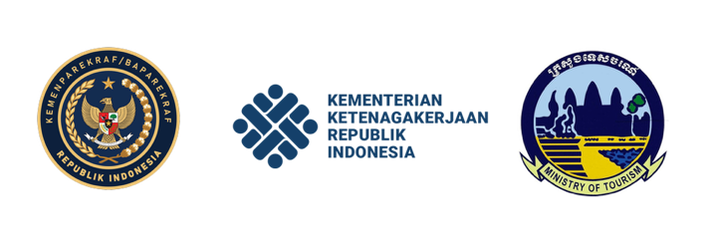

Tentang AJARskills
AJARskills berfokus kepada pelatihan vokasi yang menekankan kepada kolaborasi antara pemerintah pusat, pemerintah daerah, asosiasi profesi, lembaga nirlaba serta lembaga-lembaga sosial lainnya dengan membuat dan melaksanakan program belajar dengan kurikulum nasional dan internasional yang khusus bergerak pada pelatihan vokasi.
AJARskills merupakan program pentahelix yang diciptakan untuk membuat program-program gotong royong dalam rangka membangun Wonderful Indonesia.
Program Belajar Pariwisata
Sejak 2017 silam, AJARSkills adalah EdTech pertama dikawasan ASEAN yang bekerjasama dengan National Tourism Professionals Board untuk mentransformasikan kurikulum belajar standar kompetensi ASEAN dengan beragam jenis konten digital menggunakan platform belajar berbasis kompetensi.
Selain menggunakan ASEAN Tools Box sebagai basis kurikulum, Kami juga dapat menyajikan customized program sesuai sasaran pembelajaran yang akan diraih dengan beragam jenis mode belajar.

Kartu Pra Kerja
Manfaatkan kesempatan dari pemerintah bagi kamu yang ingin belajar dari rumah! AJARskills telah mengembangkan berbagai macam jenis program untuk mendukung Kartu Pra Kerja sesuai sasarannya.
Pelajari YukProgram Pariwisata
Indonesia adalah negara terbesar di kawasan ASEAN dan kaya akan flora dan fauna. Kami yakin dengan belajar, Indonesia akan mempimpin Industri Pariwisata di kawasan regional. Kami memiliki beragam program yang menyasar dunia pendidikan formal dan informal, Desa Wisata serta UMKM yang bergerak diberbagai sektor pendukung Industri Pariwisata dengan konsep Pentahelix.
Materi dan platform belajar Kami berbasis kompetensi dengan model belajar Hybrid pertama yang diimplementasikan di kawasan ASEAN dengan berbasis ASEAN Common Competency Standards for Tourism Professionals (ACCSTP).
Apakah kamu Pelaku Industri Pariwisata?
Apakah kamu ingin mendapatkan pelatihan gratis untuk karyawan? Apakah kamu akan merekrut pegawai baru yang sudah terlatih?
AJARskills memiliki beragam program pelatihan dengan berbagai macam jenis program pengembangan SDM di bidang pariwisata dan perhotelan yang bisa kamu dapatkan secara gratis! Semua program difasilitasi oleh pemerintah, NGO dan Lembaga Nirlaba lainnya baik dari dalam dan luar negeri.
Dengan bergabung menjadi mitra Kami, maka kamu dapat membantu Indonesia maju dan menjadi bagian penting dari program pentahelix yang merupakan program kolaborasi antara Industri Pariwisata, Asosiasi, Pemerintah, Media, Bisnis dan juga Lembaga Nirlaba lainnya yang bertujuan untuk saling bersinergi membangun negeri.
Mitra Industri Perhotelan
Jaringan mitra kami saat ini adalah operator Hotel & Resort yang hadir diberbagai kota di Indonesia.
Mitra Pemerintah
Berikut ini adalah mitra dari Pemerintah baik dari dalam dan luar negeri.
AJAR Hospitality adalah pendiri dan bagian dari:
BLIHO adalah perusahan yang ahli di bidang Transformasi Kepemimpinan, Budaya Pelayanan, Perancang Pelatihan Korporasi dan Strategi Sumber Daya Manusia untuk multi industri. BLIHO merupakan perusahaan konsorsium yang terdaftar di Paris, Perancis dan beroperasi di benua Eropa, Timur Tengah, dan Asia Pasifik.